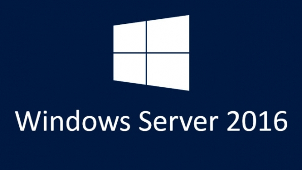

Instal·lació i administració de sistemes operatius de propietat
El sistema operatiu en xarxa Microsoft Windows Server 2016 (o Windows Server vNext) és l’última versió de Microsoft Windows en la línia Server (sistemes operatius desenvolupats per Microsoft per al seu us en servidors). El seu homòleg en la versió d’estacions de treball seria el Microsoft Windows 10.
- 
- Imatge identificativa del Microsoft Windows Server.
El Microsoft Windows Server 2016 succeeix al Microsoft Windows Server 2012 R2 en la línia de sistemes operatius per a servidors. El llançament inicial va tenir lloc al setembre del 2016 i actualment la versió més recent és el Microsoft Windows Server 2016 RS1.
En la secció “Annexos” del material web, corresponent a aquesta unitat, trobareu una guia d’instal·lació del sistema operatiu.
Les principals noves característiques de Windows Server 2016 són les següents:
- Nano Server. Emprant aquesta tècnica es dissenyen de manera independent els components del sistema operatiu. Això comporta un gran avantatge, ja que permet eliminar o instal·lar components nous amb facilitat.
- Entorn de preinstal·lació i prearrencada. L’entorn de preinstal·lació de Windows substitueix l’MS-DOS (Windows PE 2.0, Windows Preinstallation Environment). Aquest entorn s’utilitza en tasques d’instal·lació, implementació, recuperació i resolució de problemes. Aquest entorn, per exemple, permet accedir a un altre sistema operatiu instal·lat a la mateixa màquina, sempre que aquest sistema sigui anterior al Microsoft Windows Vista.
- Control de comptes d’usuari. Les aplicacions s’executaran sempre sota els privilegis d’un compte d’usuari. El control de comptes d’usuari (UAC, user account control) millora la seguretat de l’equip i permet crear comptes d’usuari diferents del compte d’administrador.
Cal tenir present que una màquina gestionada amb el Microsoft Windows Server 2008 no pot ni hivernar ni entrar en mode suspès. Tampoc no es pot restaurar. El Microsoft Windows Server 2008 no utilitza informació de rendiment, té moltes limitacions pel que fa a l’estalvi energètic i tampoc no es preocupa gaire per oferir una interfície d’usuari meravellosa. Contràriament, aquest sistema operatiu està dissenyat per fer tasques pròpies de servidor.
La família Microsoft Windows Server 2016
El Microsoft Windows Server 2016 constitueix una família de productes que us permet escollir el més adient per a les vostres necessitats.Les versions actuals s’han resumit així, les diferents versions que teniu són les següents:
Edicions del Microsoft Windows Server 2016
L’evolució del programari és contínua. En aquest cas concret, comprovareu que en el mercat hi ha menys versions del Microsoft Windows Server 2008, amb aquestes versions es vol donar solucions a les necessitats empresarials d’avui en dia.
- Microsoft Windows Server 2016, Standard Edition. Aquesta edició proporciona serveis i recursos a altres sistemes de la xarxa. Es considera el substitut natural del Microsoft Windows Server 2008.Recomanda per entorns de baixa densitat o no virtualitzats.(Requereix CAL)
- Microsoft Windows Server 2016, Essentials Edition. Ofereix més característiques que l’edició estàndard. Correspon a un servidor en primer lloc connectat al núvol molt adequada a entorns de màxim 25 usuaris , substitueix a la antiga Foundation Edition que no està disponible en aquesta edició.
- Microsoft Windows Server 2016, Datacenter Edition. Aquest és el producte més robust de Microsoft. Presenta millores en la utilització de clúster i permet utilitzar grans quantitats de memòria ( pot treballar amb 24 TB de RAM).Per entorns altament virtualitzats i centres de dades definits per programari.(Requereix CAL)
Client Access License Si les estacions de treball a la teva organització estan en xarxa, probablement depenguis d’un programari de servidor en xarxa per dur a terme certes funcions, com ara l’ús compartit d’arxius i impressores. Per accedir a aquest programari de servidor legalment, pot ser que es requereixi una llicència d’accés de client (CAL). Una CAL no és un producte de programari; més aviat, és una llicència que li dóna a l’usuari el dret a accedir al servei del servidor.
Controladors de domini
Gestionar l’accés a un domini de xarxa és una tasca tan important que requereix algun mecanisme que se n’ocupi de manera gairebé exclusiva.
Un controlador de domini és una part essencial dels sistemes operatius de Microsoft. S’encarrega fonamentalment d’emmagatzemar les parelles usuari-contrasenya dels comptes d’usuari que tenen accés al domini de xarxa. Aquest controlador centralitza la funció d’autenticar l’accés al domini.
Seguint els passos del Microsoft Windows Server 2008 i el Microsoft Windows Server 2012, el sistema operatiu actual utilitza un model de replicació multimestre, l’Active Directory.
La versió de l’Active Directory que utilitza el sistema operatiu actual de Microsoft és diferent a la de les versions anteriors. Per començar, s’han creat una sèrie de serveis nous:
- AD CS: serveis de certificate server de l’Active Directory. Aquest servei proporciona les funcions necessàries per emetre i revocar certificats digitals per a usuaris, estacions de treball i servidors.
- AD DS: serveis de domini de l’Active Directory. Aquest servei proporciona els serveis de directori necessaris per crear un domini i un magatzem de dades que contindrà la informació dels objectes de la xarxa i la posarà a l’abast dels usuaris.
Normalment no s’utilitza el nom serveis de domini de l’Active Directory ni AD DS, ja que AD DS és el nucli de l’Active Directory. Es fa servir de l’Active Directory quan en realitat es fa referència a serveis de domini de l’Active Directory o a l’AD DS.
- AD FS: serveis de federació de l’Active Directory. Complementa les característiques d’autenticació i gestió d’accés ofertes per l’AD DS, i les estén al web.
- AD LDS: serveis de directori lleuger de l’Active Directory. Proporciona un magatzem de dades a les aplicacions basades en la utilització del directori que no necessitin ni l’AD DS ni s’hagin d’instal·lar en controladors de domini.
- AD RMS: serveis de gestió de drets de l’Active Directory. Constitueix una capa de protecció de la informació de l’organització que es pot estendre més enllà de l’empresa.
Serveis de resolució de noms
La resolució de noms és un mecanisme que facilita la comunicació entre els equips de la xarxa. El Microsoft Windows Server 2016 utilitza tres sistemes de resolució de noms:
DHCP (protocol dinàmic de configuració d’hoste) és capaç d’assignar adreces IP als equips que formen part de la xarxa.
- DNS: sistema de resolució de noms de domini. Converteix noms d’ordinadors en adreces IP. El DNS és un protocol que actua sobre la pila de protocols TCP/IP i es pot integrar dins el WINS, el DHCP i els serveis de domini de l’Active Directory.
- WINS: servei de noms d’Internet de Windows. Converteix noms d’ordinadors en adreces IP. Aquest protocol és necessari per al funcionament dels sistemes anteriors al Windows 2000.
- LLMNR: resolució de noms de multidifusió local de vincles. Duu a terme la resolució de noms punt a punt per a dispositius amb adreces IPv4, IPv6 o totes dues. Descarrega els servidors DNS o WINS.
Eines més usuals
Els sistemes Microsoft dissenyen un gran nombre d’eines que faciliten l’administració dels sistemes. En el sistema operatiu Microsoft Windows Server 2016 les eines més utilitzades són les següents:
- Plafó de control: conté una sèrie d’eines que ajuden a gestionar la configuració del sistema. Des d’aquí podreu modificar paràmetres de seguretat i del sistema, de la xarxa i de l’accés a Internet, modificar la configuració dels dispositius de maquinari, desinstal·lar programes, agregar o treure comptes d’usuari, personalitzar l’aparença del sistema, configurar el rellotge i l’idioma o optimitzar la presentació visual.
- Eines gràfiques d’administració: conté les eines més útils i efectives per administrar els equips i els recursos de les xarxes. Per exemple, podreu fer còpies de seguretat, treballar amb el programador de tasques, accedir al visor d’esdeveniments o configurar el tallafocs del sistema operatiu.
- Assistents d’administració: és un conjunt d’eines que automatitzen les tasques administratives. Aquests assistents els trobareu a l’administrador del servidor, el qual és l’eina més important que s’utilitza en la tasca d’administrar el sistema operatiu Microsoft Windows Server 2016.
- Utilitats de la línia d’ordres: pràcticament totes les eines gràfiques es poden executar des de la línia d’ordres. Si escriviu NET HELP en el símbol del sistema seguit d’una instrucció us apareixerà ajuda de com utilitzar aquesta ordre.
Podeu veure els continguts del tauler de control en la figura. Disposeu d’una sèrie d’eines molt útils, com la gestió dels comptes d’usuari. Sense cap mena de dubte obrireu molt sovint aquest tauler per fer tasques administratives del sistema.
Interfície Windows PowerShell
Microsoft ha desenvolupat una interfície de línia d’ordres molt potent i flexible anomenada PowerShell. Aquesta interfície permet cridar ordres cmdlets i utilitzar característiques de programació.
Les cmdlets són unes ordres que permeten fer una sèrie de tasques directament relacionades amb l’administració del sistema.
Millores que ofereix el PowerShell
Aquesta interfície permet a desenvolupadors de programari independents crear cmdlets personalitzades per millorar aplicacions i administrar el sistema.
Si voleu instal·lar la interfície PowerShell haureu de seguir els passos següents:
- Cliqueu a Inicio.
- Seleccioneu Herramientas administrativas.
- Cliqueu a Administrador del servidor.
- Dins el node Características cliqueu a Agregar características.
- Seleccioneu Windows PowerShell dins del quadre de diàleg Asistente para agregar características.
- Cliqueu a Siguiente i després a Instalar.
Des del símbol del sistema s’executarà PowerShell i s’escriurà powershell al símbol del sistema.
Instal·lació del Microsoft Windows Server 2016
Abans d'iniciar la instal·lació...
… planifiqueu l’arquitectura que haurà de tenir el servidor. Heu de saber com es farà la instal·lació de programari i com respondrà el maquinari al final del procés.
La instal·lació del Microsoft Windows Server 2008 no s’ha de prendre a la lleugera. No és difícil d’instal·lar, però com a tècnics heu d’instal·lar el que realment necessiteu on ho necessiteu.
Una vegada iniciat el procés d’instal·lació, no és recomanable desfer la instal·lació per tal de fer modificacions o resoldre problemes. Abans de començar, llegiu bé la documentació.
Requeriments del sistema
A la pàgina web oficial de Microsoft trobareu els requisits del sistema. La taula us pot servir de guia.
| Component | Requisit |
|---|---|
| Processador | Com a mínim necessitareu 1,4 GHz (processador x64). Cal dir que si treballeu en sistemes basats en Itanium necessitareu un processador Intel Itanium 2. |
| Memòria RAM | Com a mínim 512 MB |
| Disc dur | Com a mínim 32 GB |
| Sortida estàndard | Com a mínim Súper VGA (800×600) |
| Altres | Lector DVD, teclat i ratolins compatibles amb Microsoft |
Aquests cinc elements, però, són mínims i no garanteixen una resposta àgil del sistema. Es recomana que el vostre sistema tingui les característiques que es mostren a la taula.
| Component | Requisit |
|---|---|
| Processador | 3 GHz o més |
| Memòria RAM | 2 GB són necessaris per suportar una instal·lació completa |
| Disc dur | 80 GB per a una instal·lació completa que permeti portar a terme determinades tasques |
| Sortida estàndard | Com a mínim Súper VGA (800×600) |
| Altres | Lector DVD, teclat i ratolins compatibles amb Microsoft |
Funcions i serveis del Microsoft Windows Server 2016
Si és la primera vegada que instal·leu el Microsoft Windows Server 2016 no us amoïneu. De fet, si coneixeu algun sistema operatiu servidor de Microsoft no tindreu gaires avantatges, ja que hi ha moltes diferències entre la versió 2016 i les versions anteriors.
Primer de tot, cal que conegueu bé aquests components:
- Funcions del servidor. Són un conjunt de característiques molt relacionades entre elles que permeten fer tasques als usuaris i a la resta de màquines d’una xarxa. Un servidor es pot especialitzar en una única funció o en diverses.
- Serveis de funció. Constitueixen el programari que utilitzen les funcions del servidor. Funcions tan útils com el servidor de noms de domini (DNS, domain name server) o el protocol dinàmic de configuració d’hoste (DHCP, dynamic host configuration protocol) estan associades a un únic servei de funció.
- Característiques. Les característiques són programes que ofereixen funcions addicionals. Es poden instal·lar independentment de les funcions del servidor i els serveis de funció.
Per configurar aquests tres components haureu d’utilitzar l’administrador del servidor, que és un complement per a la consola d’administració (MMC, Microsoft management console). Si voleu llançar l’administrador del servidor des de la consola executeu ServerManagerCmd.exe.
En la figura podeu veure l’aspecte de l’administrador del servidor. En la part esquerra de la finestra hi ha aplicacions per a funcions, diagnòstic, configuració i emmagatzematge i, com és habitual, clicant a sobre de qualsevol d’aquestes aplicacions, en la part dreta de la finestra apareixeran les seves característiques amb detall.
Afegir complements a la MMC
Dins el menú Archivo trobareu Agregar o quitar complemento, que us permetrà afegir més components a la MMC. Si necessiteu ajudes especials d’accessibilitat, heu de saber que la MMC proporciona mètodes abreujats de teclat per a seleccions i navegació.
Hi ha dependències entre les funcions del servidor, els serveis de funció i les característiques. Durant el procés d’instal·lació del Microsoft Windows Server 2008, i de manera automàtica, l’administrador les notifica. Durant la desinstal·lació de components passa el mateix. És a dir, l’administrador del servidor, en detectar-les, avisa de la desinstal·lació de tots els components relacionats.
La taula descriu les funcions principals del servidor, els serveis de funció i les característiques.
| Component | Descripció |
|---|---|
| AD CS | Serveis del servidor de certificació de l’Active Directory. Proporcionen les funcions necessàries per emetre i revocar certificats digitals. |
| AD DS | Serveis de domini de l’Active Directory. Proporcionen les funcions necessàries per emmagatzemar informació sobre usuaris, grups, equips i la resta d’objectes de xarxa. |
| AD FS | Serveis de federació de l’Active Directory. Complementen els AD DS i els estenen a la web. |
| AD LDS | Serveis de directori lleuger de l’Active Directory. Constitueixen una base de dades que utilitzen aplicacions compatibles amb el directori i que no necessiten ni els AD DS. Tampoc cal que estiguin instal·lades en un controlador de domini. |
| Servidor d’aplicacions | Permet que el servidor allotgi aplicacions distribuïdes creades amb ASP.NET, serveis empresarials i .NET Framework. |
| Servidor DHCP | Proporciona un control centralitzat de l’adreçament IP. S’encarrega bàsicament d’assignar de manera dinàmica les adreces IP dels diferents equips d’una xarxa. |
| Servidor DNS | S’encarrega de transformar els noms dels equips en adreces IP. Aquest servidor és imprescindible per al funcionament de l’Active Directory. |
| Serveis d’arxius | S’encarreguen de la compartició d’arxius i la distribució per la xarxa. |
| NPAS | Són els serveis d’accés i les directives de xarxes. S’encarreguen de gestionar l’encaminament i l’accés remot a xarxes. |
| Terminal Services | Són essencials per poder executar aplicacions que estan instal·lades en un servidor remot. |
| IIS | És el servidor web de Microsoft. S’utilitza per allotjar pàgines web i aplicacions web. |
| Serveis d’impressió | Proporcionen tot el que es necessita per gestionar impressores i gestors d’impressió. |
| WDS | Serveis d’implementació de Windows. Proporcionen tots els serveis necessaris per poder instal·lar equips amb Windows dins l’organització. |
| Windows SharePoint Services | Permeten connectar equips i informació, de manera que faciliten el treball en equip. |
| .NET Framework 3.0 | Proporciona les API de .NET Framework. |
| BitLocker | Xifratge de dades basat en maquinari. Impedeix la manipulació de dades emmagatzemades en els discos mentre la màquina està apagada. |
| BITS | Servei de transferència intel·ligent en segon pla. |
| CMAK | Conjunt d’eines d’administració i de gestió de connexions. |
| Clúster de commutació per error | Permet treballar conjuntament, a més d’un servidor per tal de proporcionar una millor disponibilitat de serveis i aplicacions. |
| GPMC | Administració de directives de grup de manera centralitzada. |
| Client d’impressió a Internet | Permet utilitzar impressores mitjançant HTTP. |
| NLB | Balanceig de càrrega de xarxa. Distribueix la càrrega de la xarxa a diferents màquines servidor. |
| Servidor SMTP | Protocol per controlar la transferència i enrutament de missatges de correu. |
| Servidor SNMP | Protocol d’administració de xarxes molt útil i fàcil d’utilitzar. |
| Subsistema per a aplicacions UNIX | Permet l’execució de determinades aplicacions basades en UNIX. |
| Windows Internal Database | Base de dades sobre l’SQL Server 2014 Embedded Edition. |
| Windows PowerShell | Entorn millorat de línia d’ordres. |
| Entorn de recuperació Windows | Permet restaurar la màquina. |
| Característiques de còpia de seguretat | Permet elaborar i restaurar còpies de seguretat. |
| Administrador de recursos de sistema | Els diversos processadors que la màquina pugui tenir gestionen la utilització de recursos. |
| Xarxes sense fil | Facilita l’ús de connexions i perfils en xarxes sense fil. |
Molts dels components comentats en la taula no s’instal·len si no ho indiqueu. Per tant, abans de començar el procés d’instal·lació, cal que el planifiqueu molt bé i reviseu quins components necessitaríeu en el vostre entorn.
Tipus d'instal·lació
La instal·lació del Microsoft Windows Server 2016 requereix un exercici previ de planificació. La mida del paquet de la versió estàndard a instal·lar va des dels 4 Gb de la instal·lació bàsica als 32 Gb de la versió completa. Des del web de Microsoft podeu descarregar una versió d’avaluació i de proves força completa que us dóna la possibilitat de provar el sistema durant seixanta dies.
Hi ha dos tipus d’instal·lació per al Microsoft Windows Server 2016:
- Instal·lació Datacenter (Experiencia de escritorio). Permet configurar tot tipus de combinacions permeses de funcions, serveis de funcions i característiques. Disposa d’una interfície d’usuari que inclou un entorn d’escriptori complet i una consola local d’administració.
- Instal·lació Server Datacenter ( antiga Core). Permet configurar un conjunt limitat de funcions i de combinacions d’aquestes funcions. Un dels límits més importants és que aquest tipus d’instal·lació no permet crear un servidor d’aplicacions. En aquest cas, un problema remarcable és la impossibilitat de treballar amb .NET Framework a causa d’incompatibilitats.
Una vegada escollit el tipus d’instal·lació, cal que decidiu si fareu una instal·lació des de zero o bé optareu per actualitzar el vostre sistema. Les característiques principals del mode d’instal·lació són les següents:
Espai del disc lliure
Tant si heu fet la instal·lació des de zero com si heu fet una actualització, aquest sistema operatiu sempre necessita tenir com a mínim un 10% de l’espai del disc lliure per a tasques diverses.
- Instal·lació des de zero. El sistema operatiu que hi hagi a l’equip se substituirà completament, de manera que les configuracions i les aplicacions es perdran.
- Actualització. En aquest cas, el sistema operatiu s’instal·la i es fa una migració de les configuracions, els documents i les aplicacions que els usuaris tenien instal·lats en la versió anterior del Microsoft Windows.
Instal·lació des de zero
Per instal·lar el Microsoft Windows Server des de zero heu de seguir els passos següents:
- Comenceu el procés d’instal·lació arrancant l’equip amb el DVD d’instal·lació del Microsoft Windows Server 2016.
- Seleccioneu l’idioma, el format de data, la moneda i la distribució del teclat.
- Cliqueu a Instalar ahora.
- Si l’equip ja té un sistema operatiu i teniu accés a Internet, podreu descarregar actualitzacions durant el procés d’instal·lació.
- Introduïu la clau del producte.
- Decidiu quina versió necessiteu instal·lar (versió experiència escriptori o Server Datacenter).
- Si esteu d’acord amb els termes de la llicència, accepteu-los.
- Seleccioneu el tipus d’instal·lació que voleu fer.
- Indiqueu on voleu fer la instal·lació.
- A partir d’aquí, s’inicia la còpia de fitxers des de la imatge del disc.
Actualització
Assegureu-vos que el vostre equip pot arrancar des de la unitat de DVD.
Si us cal fer una instal·lació des de zero i migrar la configuració d’usuaris, documents i aplicacions de la versió anterior del Windows, la solució és fer una actualització. Per actualitzar el sistema operatiu actual en el Microsoft Windows Server 2008 convindria que seguíssiu els passos següents:
- Inicieu una sessió de Microsoft Windows amb permisos d’administrador.
- Introduïu el DVD amb l’instal·lador del Microsoft Windows Server 2016.
- Si no arranca automàticament, executeu el fitxer que hi ha en el DVD que porta l’etiqueta Setup i l’extensió exe.
- Cliqueu a Instalar ahora.
- Si necessiteu obtenir actualitzacions per mitjà d’Internet, ara ho podreu indicar.
- Decidiu quina versió necessiteu instal·lar (versió completa o Server Core).
- Si esteu d’acord amb els termes de la llicència, accepteu-los.
- Seleccioneu el tipus d’instal·lació a Actualización.
- Després de copiar la imatge del disc s’instal·laran les característiques que depenguin de la configuració i el maquinari detectats en l’equip.
Utilització del símbol del sistema durant la instal·lació
A vegades, durant el procés d’instal·lació us manquen dades que necessiteu per continuar la instal·lació. En el moment en què l’assistent de la instal·lació us pregunta ¿Dónde desea instalar Windows? podeu accedir al símbol del sistema prement Majúscules i F10. Les utilitats a les quals tindreu accés són les que teniu en la taula.
| Ordre | Descripció |
|---|---|
| ARP | Mostra i modifica la taula de traduccions d’adreces físiques que utilitza el protocol ARP. |
| ASSOC | Mostra i modifica l’associació d’extensions d’arxius. |
| ATTRIB | Mostra i modifica els atributs dels fitxers. |
| CALL | N’executa un script o una etiqueta. |
| CD/CHDIR | Mostra el nom del directori actual o permet canviar de directori. |
| CHKDSK | Cerca errors en discos i mostra un informe dels resultats. |
| CHKNTFS | Mostra l’estat dels volums. |
| CHOICE | Crea una llista d’opcions en arxius d’execució per lots. |
| CLS | Neteja la finestra de la consola. |
| CMD | Executa una nova consola de línia d’ordres. |
| COLOR | Canvia els colors de la finestra del símbol de sistema. |
| CONVERT | Transforma volums FAT a NTFS. |
| DATE | Mostra i modifica la data del sistema. |
| DEL | Elimina un o diversos fitxers. |
| DIR | Mostra la llista de fitxers i carpetes que hi ha en el directori actual. |
| DISKPART | Permet gestionar discos, particions i volums. |
| DOSKEY | Edita línies d’ordres, memoritza ordres de Windows i crea macros. |
| ECHO | Mostra missatges i activa o desactiva l’eco. |
| ENDLOCAL | Atura el seguiment dels canvis en l’entorn en arxius d’execució per lots. |
| ERASE | Elimina un o més arxius. |
| EXIT | Abandona l’intèrpret d’ordres. |
| EXPAND | Descomprimeix fitxers. |
| FIND | Cerca cadenes de text dins d’arxius. |
| FORMAT | Formata una unitat. |
| FTP | Transfereix fitxers. |
| HOSTNAME | Mostra el nom de l’equip. |
| IPCONFIG | Mostra la configuració TCP/IP. |
| LABEL | Crea, modifica o elimina l’etiqueta del disc. |
| MD/MKDIR | Crea un directori o un subdirectori. |
| MORE | Mostra informació pantalla a pantalla. |
| MOUNTVOL | Administra el punt de muntatge d’un volum. |
| MOVE | Trasllada arxius d’un directori a un altre dins la mateixa unitat. |
| NBSTAT | Mostra l’estat de NetBIOS. |
| NET ACCOUNTS | Gestiona les directives de comptes d’usuaris i contrasenyes. |
| NET COMPUTER | Afegeix equips a un domini o els elimina. |
| NET CONFIG SERVER | Mostra o modifica la configuració dels serveis d’un servidor. |
| NET CONFIG | Mostra o modifica la configuració dels serveis d’un equip. |
| NET CONTINUE | Reinicia l’execució d’un servei en pausa. |
| NET FILE | Mostra o administra els fitxers oberts en el servidor. |
| NET GROUP | Mostra o administra els grups globals. |
| NET LOCALGROUP | Mostra o administra els grups locals. |
| NET NAME | Mostra o modifica els destinataris dels missatges del servei de missatgeria. |
| NET PAUSE | Posa en pausa un servei. |
| NET PRINT | Mostra o administra les tasques d’impressió i les cues compartides. |
| NET SEND | Envia un missatge. |
| NET SESSION | Mostra la llista de sessions que hi ha o les desconnecta. |
| NET SHARE | Mostra o administra les impressores i els directoris compartits. |
| NET START | Mostra o posa en marxa els serveis de xarxa. |
| NET STATISTICS | Mostra estadístiques d’estacions de treball i de servidors. |
| NET STOP | Para serveis. |
| NET TIME | Mostra l’hora i permet sincronitzar-la. |
| NET USE | Mostra o administra les connexions remotes. |
| NET USER | Mostra o administra els comptes locals d’usuari. |
| NET VIEW | Mostra els recursos i els equips de xarxa. |
| NETSH | Obre un intèrpret d’ordres independent. |
| NETSTAT | Mostra l’estat de les connexions de xarxa. |
| PATH | Mostra o configura la ruta de cerca per a arxius executables que utilitza l’intèrpret d’ordres. |
| PATHPING | Localitza camins i proporciona informació sobre els paquets perduts. |
| PAUSE | Posa en pausa l’execució d’un script. |
| PING | Determina si és possible establir una connexió per mitjà de la xarxa. |
| POPD | Canvia al directori emmagatzemat utilitzant PUSHD. |
| Imprimeix un fitxer de text. | |
| PROMPT | Modifica el símbol de sistema del Windows. |
| PUSHD | Emmagatzema el directori actual i canvia a un directori nou. |
| RD/RMDIR | Elimina un directori. |
| RECOVER | Recupera informació llegible d’un arxiu corrupte o defectuós. |
| REG ADD | Insereix en el registre una subclau o entrada nova. |
| REG COMPARE | Compara subclaus o entrades del registre. |
| REG COPY | Copia una entrada del registre a la ruta especificada. |
| REG DELETE | Elimina una subclau o diverses entrades del registre. |
| REG QUERY | Mostra les entrades que hi ha en una clau. |
| REG RESTORE | Torna a emmagatzemar en el registre les claus guardades. |
| REG SAVE | Emmagatzema en un fitxer la llista de subclaus, entrades i valors especificada. |
| REGSVR32 | Registra i elimina el registre del DLL. |
| REM | Afegeix comentaris als scripts. |
| REN | Canvia el nom d’un fitxer. |
| ROUTE | Administra les taules d’encaminament. |
| SET | Examina o modifica les variables d’entorn de Windows. |
| SETLOCAL | Posa en marxa el procés de seguiment de canvis en l’entorn. |
| SFC | Cerca arxius protegits del sistema i comprova que el seu estat sigui correcte. |
| SHIFT | Canvia la posició de paràmetres reemplaçables en scripts. |
| START | Obre una finestra nova de l’intèrpret d’ordres per executar el programa o l’ordre especificada. |
| SUBST | Associa una ruta d’accés a una lletra d’unitat. |
| TIME | Mostra o estableix l’hora del sistema. |
| TITLE | Estableix el títol de la finestra de l’intèrpret d’ordres. |
| TRACERT | Mostra la ruta entre dos equips. |
| TYPE | Mostra el contingut d’un fitxer de text. |
| VER | Mostra la versió del Windows. |
| VERIFY | Indica si el Windows ha de comprovar o no que els arxius s’escriguin correctament en el disc. |
| VOL | Mostra l’etiqueta i el número de sèrie d’un disc. |
Eliminar particions de disc durant la instal·lació
A vegades us podeu trobar que, havent iniciat la instal·lació, no podeu utilitzar el disc dur que voleu. Saber treballar amb les ordres més necessàries des de la línia d’ordres us pot ser molt útil. Seguiu els passos següents per solucionar aquesta situació:
- Quan l’assistent de la instal·lació us pregunti ¿Dónde desea instalar Windows? premeu Majúscules i F10.
- Inicieu la utilitat DiskPart. Per fer-ho, escriviu diskpart a la línia d’ordres.
- Traieu la llista de discos de l’equip mitjançant l’ordre list disk.
- Escriviu letec disc seguit del número del disc amb el qual necessiteu treballar.
- Teclegeu clean per eliminar les particions del disc.
- Quan la utilitat DiskPart acabi de formatar, escriviu exit per sortir.
- Tanqueu la interfície. Per fer-ho, escriviu exit una altra vegada.
Administració del Microsoft Windows Server 2016
La gestió d’un servidor és una tasca complexa i de risc. La utilització de la consola és una opció força interessant per a l’usuari expert, sobretot per la rapidesa d’acció que ofereix, però pot presentar inconvenients a l’hora de gestionar alguns recursos.
L’administrador de servidors simplifica la tasca d’administració i protecció de les funcions del servidor. Permet administrar la informació del sistema i la identitat d’un servidor, de manera que en mostra l’estat, detecta problemes de configuració i administra les funcions.
Utilitzar l’administrador de servidors és una opció molt recomanable en el cas que necessiteu fer qualsevol d’aquestes tasques:
- Administrar la configuració del servidor.
- Administrar la instal·lació del servidor.
- Administrar les sessions i les connexions al servidor.
- Administrar serveis.
- Administrar aplicacions de xarxa.
- Etc.
Configuració inicial
Si no voleu...
… que cada vegada que inicieu el sistema aparegui la finestra que mostra les tasques de configuració inicial, marqueu l’opció No mostrar esta ventana al iniciar la sesión, que apareix en el marge inferior esquerre.
Una vegada s’ha instal·lat el sistema operatiu Microsoft Windows Server 2008 correctament, apareix en pantalla una finestra emergent. Aquesta finestra mostra les tasques de configuració inicial.
En primer lloc caldrà proporcionar la informació següent a l’equip:
- Establir zona horària. Tots els servidors estan configurats per sincronitzar l’hora de manera automàtica amb un servidor d’hora d’Internet, però des d’aquest menú podreu establir la zona horària. Per fer aquesta acció, també podeu clicar amb el botó dret del ratolí al damunt del rellotge que teniu a la barra d’eines. A continuació, heu de seleccionar l’opció Ajustar fecha y hora.
- Configurar funcions de xarxa. Des d’aquí accedireu directament a la configuració de xarxa. Tingueu en compte que l’encaminament dinàmic està configurat per defecte. Quan inicieu l’equip, aquest equip pregunta a la xarxa si hi ha un servidor DHCP. Si hi és, rep la petició de rebre una adreça IP lliure i l’entrega. Contràriament, si no hi és, s’assigna automàticament una adreça IP. El Microsoft Windows Server 2016 té un menú de control que també permet accedir a la configuració de les funcions de xarxa.
- Proporcionar nom de l’equip i del domini. El nom de l’equip per defecte és WORKGROUP. Aquestes dades també les podreu modificar des del menú de control del sistema operatiu.
A banda de facilitar informació al sistema, la finestra de tasques de configuració inicial us permet fer actualitzacions en el sistema:
- Habilitar comentaris i actualitzacions automàtiques. La configuració per defecte no té habilitada l’actualització automàtica i sí que envia informes d’error a Microsoft.
- Descarregar i instal·lar actualitzacions. Mitjançant el Windows Update del menú de control podeu descarregar i instal·lar actualitzacions en el sistema operatiu. Per defecte, aquesta opció, i en diferència a les versions anteriors, està acivada, i serà l’administrador que escollirà quan vol realitzar les actualitzacions.
- Agregar funcions. Permet instal·lar funcions noves en el servidor.
- Agregar característiques. Permet agregar característiques mitjançant un assistent. Per defecte, el servidor no té cap característica configurada.
- Agregar escriptori remot. Per defecte, l’escriptori remot no està activat per motius de seguretat. Des d’aquesta opció podreu configurar l’accés al servidor des d’un altre equip.
- Configurar tallafoc del Windows. Per defecte, el sistema té activat el tallafoc del Windows. Des d’aquí podreu canviar la configuració del tallafoc.
Normalment no tornareu a accedir a la finestra de tasques de configuració inicial, ja que fareu tots els canvis de configuració que necessiteu des d’altres menús. La figura mostra aquesta finestra, des d’aquí podeu accedir de manera ràpida a la configuració que es considera bàsica per al sistema. Quan hi hàgiu introduït les dades essencials, ja podreu continuar treballant amb tot el potencial del sistema.
Administració de servidors
L’entorn d’administració especialitzat del Microsoft Windows Server 2008 és la consola d’administració del servidor. Des d’aquí fareu totes les tasques bàsiques per administrar el vostre sistema.
Per accedir a la consola d’administració de servidors caldrà que seguiu els passos següents:
- Cliqueu a Inicio.
- Expandiu Herramientas administrativas.
- Cliqueu a Administrador del servidor.
Quan obriu la consola us adonareu que sou en un entorn típic de Microsoft: a l’esquerra trobareu un plafó amb totes les opcions agrupades en forma d’arbre i a la dreta, el detall de l’opció escollida.
El primer nivell de l’arbre de categories que teniu en el plafó esquerre conté les opcions següents:
- Funcions. Us mostrarà un resum de les funcions que teniu instal·lades. Podreu veure l’estat de les funcions i les opcions d’administració de cadascuna d’elles. És possible detallar aquesta informació dins de cada funció.
- Característiques. Us mostrarà un resum de les característiques instal·lades. Des d’aquí comprovareu l’estat que presenten actualment.
- Diagnòstic. Donarà accés a eines d’administració de serveis i dispositius i a l’examen de successos.
- Configuració. Des d’aquí accedireu a les eines bàsiques de configuració del sistema.
- Emmagatzemament. Aquesta categoria us donarà accés a les eines bàsiques d’administració d’unitats d’emmagatzematge per fer, per exemple, còpies de seguretat.
Propietats del sistema
Per accedir a la informació del servidor i fer tasques d’administració seleccioneu Inicio > Panel de Control > Sistema. El que es mostra a continuació és un recull de dades bàsiques agrupades en quatre àrees:
- Edició del Windows. Aquest apartat mostra l’edició del Microsoft Windows Server 2008 instal·lada i la versió del sistema operatiu i el Service Pack instal·lats.
- Sistema. Presenta informació sobre la marca, el model i les característiques bàsiques del processador, indica la memòria RAM instal·lada a l’equip i el tipus de sistema (32 o 64 bits).
- Configuració de nom, domini i grup de treball de l’equip. Aquí podreu veure el nom de l’equip, el nom complet, una breu descripció d’aquest equip i el domini al qual pertany. Des d’aquí mateix, mitjançant el botó que teniu més a la dreta i que s’anomena Cambiar la configuración, podreu canviar la configuració que veieu en pantalla.
- Activació del Windows. Si heu introduït la clau del producte tindreu el sistema activat. Si encara no heu facilitat una clau vàlida haureu de clicar a Cambiar la clave del producto.
Dins la finestra de sistema, al marge superior esquerre, trobareu tres accessos directes que us permetran administrar dispositius, configurar l’accés remot i fer una configuració avançada del sistema.
El quadre de diàleg Propiedades del sistema conté quatre fitxes que us poden donar informació molt útil del sistema:
DEP
La tecnologia DEP (data execution prevention) és una tecnologia de protecció de la memòria. Bàsicament s’encarrega d’impedir la inserció de codi nociu per al sistema. Cal destacar que les versions de 32 bits del Windows permeten la versió DEP d’AMD.
- Fitxa Nombre del equipo: examina i modifica els valors que identifiquen l’equip a la xarxa. Hi apareix el nom complet de l’equip i el domini al qual pertany.
- Fitxa Hardware: permet accedir a l’administrador de dispositius i a la configuració de controladors del Microsoft Windows Update.
- Fitxa Opciones avanzadas: permet controlar una sèrie de característiques clau en el sistema, com ara el rendiment del sistema, el rendiment d’aplicacions, la configuració de la memòria virtual, la prevenció d’execució de dades, la configuració de variables d’entorn del sistema i d’usuari i la configuració d’inici i recuperació del sistema.
- Fitxa Acceso remoto: permet controlar les invitacions d’assistència remota i escriptori remot.